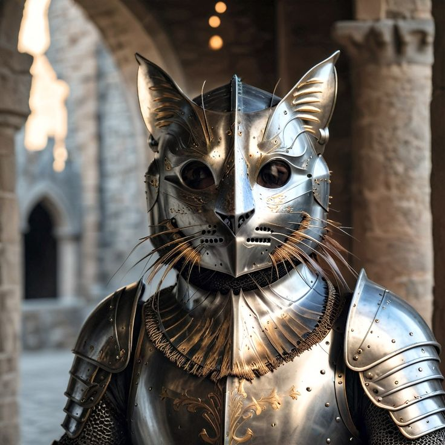
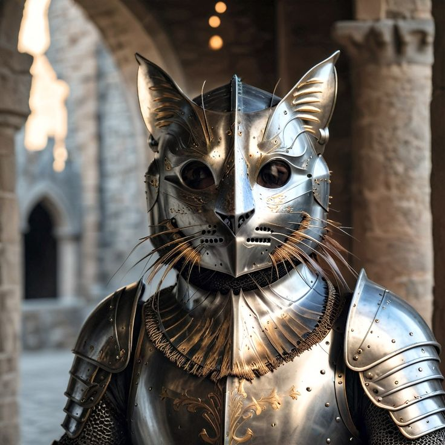

Otomatisasi tugas
AI mengotomatiskan tugas berulang, meningkatkan efisiensi dan mengurangi kesalahan manusia.
Artificial Intelligence (AI)
OpenAI
DeepMind
Anthropic
Hugging Face
C.ai
Copilot
AI mengotomatiskan tugas berulang, meningkatkan efisiensi dan mengurangi kesalahan manusia.
AI menganalisis data besar secara real-time, memberikan wawasan mendalam dan akurat.
AI memprediksi preferensi pengguna, menghadirkan pengalaman yang lebih relevan dan disesuaikan.
Some evidence and memories from explorers


 
